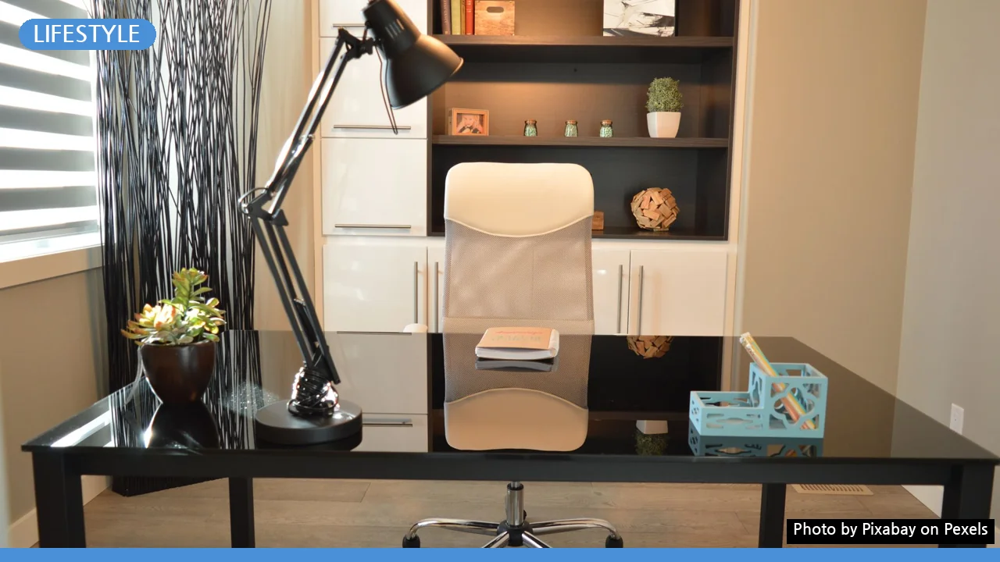
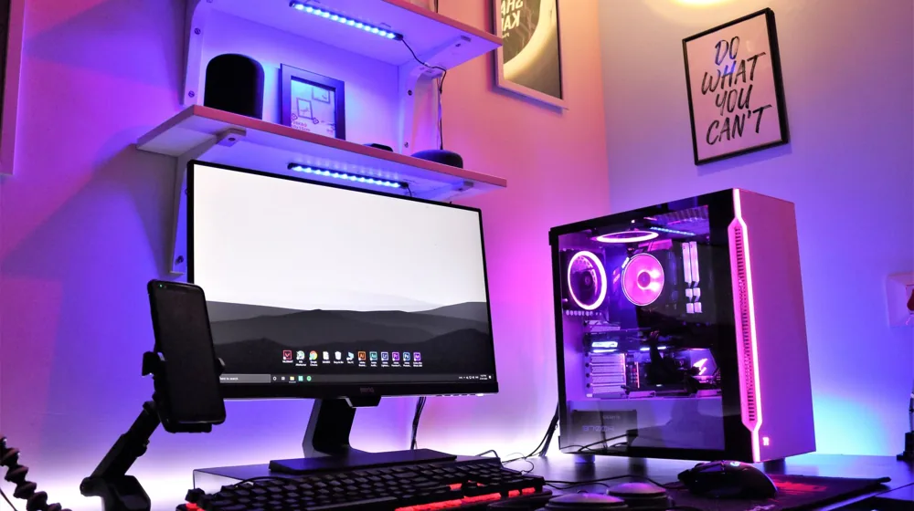
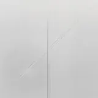

집중력 높이는 방 만들기: 돈 안 드는 5가지 환경 체크리스트
사진: Pixabay / Pexels (무료 이미지, 출처 표기)
집중을 방해하는 숨은 요인, 내 방은 안전할까?

공부나 업무를 시작하려는데 5분도 안 되어 스마트폰을 만지거나 딴청을 피우시나요? 그것은 단순히 개인의 의지력 문제가 아닙니다. 우리의 뇌가 집중할 수 없는 환경에 노출되어 있기 때문일 가능성이 매우 큽니다.
주변 환경을 과학적으로 조금만 재배치해도 인지 피로를 줄이고 몰입도를 배로 끌어올릴 수 있습니다. 지금부터 돈을 크게 들이지 않고도 즉각적인 변화를 만들어내는 실내 환경 설정법을 소개합니다.
집중력을 극대화하는 환경 체크리스트
가장 먼저 점검해야 할 핵심 요소는 조명, 온도, 소음, 그리고 공기질입니다. 아래 가이드라인을 기준으로 자신의 공부방이나 사무 공간을 체크해 보시길 바랍니다.
국내외 실내 환경 연구 기준에 따르면 이산화탄소 농도가 높아질수록 뇌로 가는 산소량이 줄어들어 급격한 피로감을 느끼게 됩니다. 창문을 2시간마다 5분씩만 열어 환기해도 학습 효율이 눈에 띄게 올라갑니다.
생산성을 높이는 데스크셋업 가이드
책상과 의자의 높이, 그리고 모니터의 위치는 신체 피로도와 직결되는 요소입니다. 아무리 집중력이 좋아도 몸이 불편하면 집중 시간은 짧아질 수밖에 없습니다.
첫째, 책상은 방문을 등지지 않도록 배치하는 것이 심리적 안정감에 유리합니다. 문이 대각선 방향으로 보이는 배치가 가장 이상적입니다. 시야에 문이 보이지 않으면 무의식적인 경계 태세로 인해 스트레스 호르몬이 미세하게 분비됩니다.
둘째, 모니터 상단은 눈높이와 일직선이 되도록 맞추고, 화면과의 거리는 50~70cm를 유지해야 합니다. 고개가 앞으로 숙여지는 거북목 자세는 목덜미 근육을 긴장시켜 두통을 유발하기 쉽습니다.
집중의 적, 스마트폰과 디지털 환경 격리하기
아무리 완벽한 조명과 온도를 갖추었어도 스마트폰 알림음 하나에 모든 몰입 흐름이 끊겨버립니다. 인지 심리학 연구들에 따르면 스마트폰이 단순히 시야에 보이는 것만으로도 뇌의 일부 자원이 소모된다고 합니다.
집중해야 하는 시간 동안만큼은 스마트폰을 무음으로 설정한 뒤 가방 안이나 다른 방에 완전히 격리하는 것을 권장합니다. '손만 뻗으면 닿는 거리'에서 치워버리는 행동이 집중력을 지키는 가장 쉽고 확실한 방법입니다.
또한 PC로 작업할 때는 브라우저 탭을 동시에 여러 개 띄워두지 마세요. 지금 당장 처리해야 할 단 하나의 창만 띄우고 나머지는 모두 최소화하는 멀티태스킹 차단 습관이 필요합니다.
초보자를 위한 3단계 실천 안내
환경을 한 번에 모두 바꾸려면 시작하기도 전에 지치기 쉽습니다. 오늘 당장 실천해볼 수 있는 3단계 프로세스입니다.
- 1단계: 책상 위를 깨끗이 비우고, 지금 해야 할 작업 도구(책 또는 노트북) 한 가지만 남겨둡니다.
- 2단계: 창문을 열어 실내 공기를 완전히 순환시킨 뒤 온도를 평소보다 1~2도 낮게 맞춥니다.
- 3단계: 스마트폰을 다른 방으로 옮기거나 완전히 보이지 않는 서랍 속에 넣습니다.
이 세 가지만 즉시 실행해도 우리 뇌는 '이제 몰입할 시간'이라는 신호로 받아들이기 시작합니다. 작은 환경 변화가 만드는 큰 차이를 직접 경험해 보세요.
🔗 이 글도 함께 보면 좋아요: 중고폰·노트북 살 때 돈 버리는 실수 피하는 5가지 필수 체크리스트
관련 추천 상품
이 포스팅은 쿠팡 파트너스 활동의 일환으로, 이에 따른 일정액의 수수료를 제공받습니다.
한눈에 보는 상품 목록

LED 독서실 스탠드
모니터 받침대